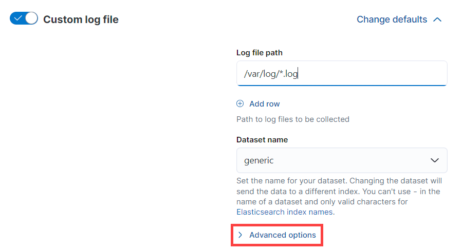

ECS formatted application logs
editECS formatted application logs
edit[preview] This functionality is in technical preview and may be changed or removed in a future release. Elastic will work to fix any issues, but features in technical preview are not subject to the support SLA of official GA features.
Logs formatted in Elastic Common Schema (ECS) don’t require manual parsing, and the configuration can be reused across applications. ECS-formatted logs, when paired with an APM agent, allow you to correlate logs to easily view logs that belong to a particular trace.
You can format your logs in ECS format the following ways:
- ECS loggers: plugins for your logging libraries that reformat your logs into ECS format.
- APM agent ECS reformatting: Java, Ruby, and Python APM agents automatically reformat application logs to ECS format without a logger.
ECS loggers
editECS loggers reformat your application logs into ECS-compatible JSON, removing the need for manual parsing. ECS loggers require Filebeat or Elastic Agent configured to monitor and capture application logs. In addition, pairing ECS loggers with your framework’s APM agent allows you to correlate logs to easily view logs that belong to a particular trace.
For more information on adding an ECS logger to your application, refer to the guide for your framework:
APM agent ECS reformatting
editJava, Ruby, and Python APM agents can automatically reformat application logs to ECS format without an ECS logger or the need to modify your application. The APM agent also allows for log correlation so you can easily view logs that belong to a particular trace.
To set up log ECS reformatting:
Log ECS reformatting is controlled by the log_ecs_reformatting configuration option, and is disabled by default. Refer to the guide for your framework for information on enabling:
After enabling log ECS reformatting, send your application logs to your project using one of the following shipping tools:
- Filebeat: A lightweight data shipper that sends log data to your project.
- Elastic Agent: A single agent for logs, metrics, security data, and threat prevention. With Fleet, you can centrally manage Elastic Agent policies and lifecycles directly from your project.
Use Filebeat version 8.11+ for the best experience when ingesting logs with Filebeat.
Follow these steps to ingest application logs with Filebeat.
Install Filebeat on the server you want to monitor by running the commands that align with your system:
curl -L -O https://artifacts.elastic.co/downloads/beats/filebeat/filebeat-9.0.0-beta1-darwin-x86_64.tar.gz tar xzvf filebeat-9.0.0-beta1-darwin-x86_64.tar.gz
curl -L -O https://artifacts.elastic.co/downloads/beats/filebeat/filebeat-9.0.0-beta1-linux-x86_64.tar.gz tar xzvf filebeat-9.0.0-beta1-linux-x86_64.tar.gz
- Download the Filebeat Windows zip file: https://artifacts.elastic.co/downloads/beats/filebeat/filebeat-9.0.0-beta1-windows-x86_64.zip
-
Extract the contents of the zip file into
C:\Program Files. -
Rename the
filebeat-((version))-windows-x86_64directory to((filebeat)). - Open a PowerShell prompt as an Administrator (right-click the PowerShell icon and select Run As Administrator).
-
From the PowerShell prompt, run the following commands to install Filebeat as a Windows service:
PS > cd 'C:\Program Files{filebeat}' PS C:\Program Files{filebeat}> .\install-service-filebeat.ps1
If script execution is disabled on your system, you need to set the
execution policy for the current session to allow the script to run. For
example:
PowerShell.exe -ExecutionPolicy UnRestricted -File .\install-service-filebeat.ps1.
curl -L -O https://artifacts.elastic.co/downloads/beats/filebeat/filebeat-9.0.0-beta1-amd64.deb sudo dpkg -i filebeat-9.0.0-beta1-amd64.deb
curl -L -O https://artifacts.elastic.co/downloads/beats/filebeat/filebeat-9.0.0-beta1-x86_64.rpm sudo rpm -vi filebeat-9.0.0-beta1-x86_64.rpm
Connect to your project using an API key to set up Filebeat. Set the following information in the filebeat.yml file:
output.elasticsearch: hosts: ["your-projects-elasticsearch-endpoint"] api_key: "id:api_key"
-
Set the
hoststo your project’s Elasticsearch endpoint. Locate your project’s endpoint by clicking the help icon () and selecting Endpoints. Add the Elasticsearch endpoint to your configuration. -
From Developer tools, run the following command to create an API key that grants
managepermissions for theclusterand thefilebeat-*indices using:POST /_security/api_key { "name": "filebeat_host001", "role_descriptors": { "filebeat_writer": { "cluster": ["manage"], "index": [ { "names": ["filebeat-*"], "privileges": ["manage"] } ] } } }Refer to Grant access using API keys for more information.
Add the following configuration to your filebeat.yaml file to start collecting log data.
-
Add the following configuration to your
filebeat.yamlfile to start collecting log data.
filebeat.inputs: - type: filestream paths: /path/to/logs.json parsers: - ndjson: overwrite_keys: true add_error_key: true expand_keys: true fields: service.name: your_service_name service.version: your_service_version service.environment: your_service_environment processors: - add_host_metadata: ~ - add_cloud_metadata: ~ - add_docker_metadata: ~ - add_kubernetes_metadata: ~
|
Use the filestream input to read lines from active log files. |
|
|
Values from the decoded JSON object overwrite the fields that Filebeat normally adds (type, source, offset, etc.) in case of conflicts. |
|
|
Filebeat adds an "error.message" and "error.type: json" key in case of JSON unmarshalling errors. |
|
|
Filebeat will recursively de-dot keys in the decoded JSON, and expand them into a hierarchical object structure. |
|
|
The |
|
|
Processors enhance your data. See processors to learn more. |
- Make sure your application logs to stdout/stderr.
- Follow the Run Filebeat on Kubernetes guide.
-
Enable hints-based autodiscover (uncomment the corresponding section in
filebeat-kubernetes.yaml). -
Add these annotations to your pods that log using ECS-compatible JSON. This will make sure the logs are parsed appropriately.
annotations: co.elastic.logs/json.overwrite_keys: true co.elastic.logs/json.add_error_key: true co.elastic.logs/json.expand_keys: true
Values from the decoded JSON object overwrite the fields that Filebeat normally adds (type, source, offset, etc.) in case of conflicts.
Filebeat adds an "error.message" and "error.type: json" key in case of JSON unmarshalling errors.
Filebeat will recursively de-dot keys in the decoded JSON, and expand them into a hierarchical object structure.
- Make sure your application logs to stdout/stderr.
- Follow the Run Filebeat on Docker guide.
- Enable hints-based autodiscover.
-
Add these labels to your containers that log using ECS-compatible JSON. This will make sure the logs are parsed appropriately. In
docker-compose.yml:
labels: co.elastic.logs/json.overwrite_keys: true co.elastic.logs/json.add_error_key: true co.elastic.logs/json.expand_keys: true
|
Values from the decoded JSON object overwrite the fields that Filebeat normally adds (type, source, offset, etc.) in case of conflicts. |
|
|
Filebeat adds an "error.message" and "error.type: json" key in case of JSON unmarshalling errors. |
|
|
Filebeat will recursively de-dot keys in the decoded JSON, and expand them into a hierarchical object structure. |
From the Filebeat installation directory, set the index template by running the command that aligns with your system:
./filebeat setup --index-management
./filebeat setup --index-management
PS > .\filebeat.exe setup --index-management
filebeat setup --index-management
filebeat setup --index-management
From the Filebeat installation directory, start filebeat by running the command that aligns with your system:
sudo chown root filebeat.yml sudo ./filebeat -e
You’ll be running Filebeat as root, so you need to change ownership of the configuration file and any configurations enabled in the modules.d directory, or run Filebeat with --strict.perms=false specified. Refer to Config file ownership and permissions.
sudo chown root filebeat.yml sudo ./filebeat -e
You’ll be running Filebeat as root, so you need to change ownership of the configuration file and any configurations enabled in the modules.d directory, or run Filebeat with --strict.perms=false specified. Refer to Config file ownership and permissions.
PS C:\Program Files\filebeat> Start-Service filebeat
By default, Windows log files are stored in C:\ProgramData\filebeat\Logs.
sudo service filebeat start
If you use an init.d script to start Filebeat, you can’t specify command line flags (refer to Command reference). To specify flags, start Filebeat in the foreground.
Also, refer to Filebeat and systemd.
sudo service filebeat start
If you use an init.d script to start Filebeat, you can’t specify command line flags (refer to Command reference). To specify flags, start Filebeat in the foreground.
Also, refer to Filebeat and systemd.
Add the custom logs integration to ingest and centrally manage your logs using Elastic Agent and Fleet:
To add the custom logs integration to your project:
- In your Observability project, go to Project Settings → Integrations.
-
Type
customin the search bar and select Custom Logs. - Click Install Elastic Agent at the bottom of the page, and follow the instructions for your system to install the Elastic Agent. If you’ve already installed an Elastic Agent, you’ll be taken directly to configuring your integration.
- After installing the Elastic Agent, click Save and continue to configure the integration from the Add Custom Logs integration page.
- Give your integration a meaningful name and description.
-
Add the Log file path. For example,
/var/log/your-logs.log. -
Under Custom log file, click Advanced options.

-
In the Processors text box, add the following YAML configuration to add processors that enhance your data. See processors to learn more.
processors: - add_host_metadata: ~ - add_cloud_metadata: ~ - add_docker_metadata: ~ - add_kubernetes_metadata: ~
-
Under Custom configurations, add the following YAML configuration to collect data.
json: overwrite_keys: true add_error_key: true expand_keys: true keys_under_root: true fields_under_root: true fields: service.name: your_service_name service.version: your_service_version service.environment: your_service_environment
Values from the decoded JSON object overwrite the fields that Elastic Agent normally adds (type, source, offset, etc.) in case of conflicts.
Elastic Agent adds an "error.message" and "error.type: json" key in case of JSON unmarshalling errors.
Elastic Agent will recursively de-dot keys in the decoded JSON, and expand them into a hierarchical object structure.
By default, the decoded JSON is placed under a "json" key in the output document. When set to
true, the keys are copied top level in the output document.When set to
true, custom fields are stored as top-level fields in the output document instead of being grouped under a fields sub-dictionary.The
service.name(required),service.version(optional), andservice.environment(optional) of the service you’re collecting logs from, used for Log correlation. - An agent policy is created that defines the data your Elastic Agent collects. If you’ve previously installed an Elastic Agent on the host you’re collecting logs from, you can select the Existing hosts tab and use an existing agent policy.
- Click Save and continue.
View logs
editUse Logs Explorer to search, filter, and visualize your logs. Refer to the filter and aggregate logs documentation for more information.